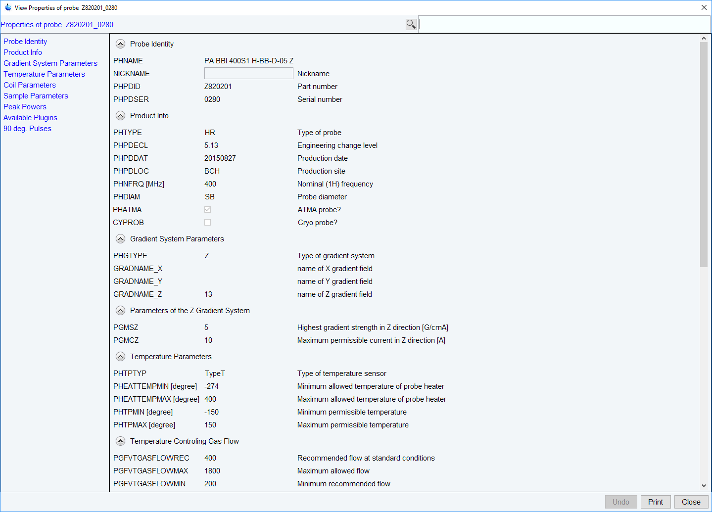
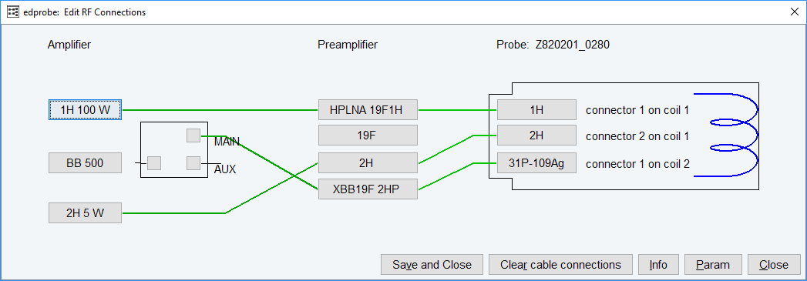

edprobe
NAME
edprobe – Edit the probe table
DESCRIPTION
The command edprobe opens the probe table editor:
The table has columns for Nickname (optional), Probe ID and description of configured probes. The Nickname can be freely chosen to identify a probe for the user more easily.
The entry which is defined as the current probe is highlighted. If an automatic probe detection through PICS is available, then the currently connected probe is automatically shown as the current probe. In that case the Set as current button is greyed out.
The probe table has a menu Manage in the upper left corner that offers the following commands:
Add a new probe
Import old probes
View Properties
Flash Pics
Add a new probe
The probe dialog editor will be opened where you can define a new probe.
The name of the new probe will be the combination of Part number and Serial number.
With Template, one can select typical probe configurations. This simplifies the entry of the probe parameters.
Import old probes
If older (edprobe) definitions of probes are available in the current installation, they are listed in the import table. By selecting an entry, all settings of this probe are imported to the probe table.
View Properties
Opens the Probe Properties of the selected entry for viewing only.

Opens the printing dialog for the Edprobe Probes Table.
Flash Pics
Allows to flash the PICS of the current probe
This requires that the probe is connected with a PICS cable. Only digitally signed PICS files can be used to flash the probe. A new PICS file must be copied (flashed) to a probe if, for some reason, the current PICS of the probe has become corrupted or when additional parameters describing probe features become available in TopSpin.
At the bottom of the edprobe dialog you can select following buttons:
Edit Properties
Opens the Probe Properties of the selected entry for editing.
If the probe is connected with a PICS cable, only a few properties can be changed, see figure above. For probes without PICS, all properties can be adjusted, see figure below.
Edit RF Connections
It displays a new window where the wiring between the amplifier or preamplifier and the probe connectors can be defined, see figure below:

Set as current
The highlighted entry will be defined as current probe. This button is only active when no automatic probe detection with PICS is available.
Delete
The selected entry will be deleted (not possible for the currently installed probe).
Close
Close the probe table editor.
By exiting edprobe, if current probe parameters have changed, the Edit RF Connections window is displayed where the preamplifier probe connections must be defined.
The current probe as defined with edprobe, is interpreted by the commands edprosol, edlock, lock, lopo and setpre as well as during IconNMR automation. At the end of an acquisition the current probe is stored in the acquisition status parameter PROBHD (see dpa).
The input files of edprobe command:
▪ <tshome>/conf/instr/probehead - current probes name
▪ <tshome>/conf/instr/spectrometer name/<part #>_<serial #>.par - probe parameters